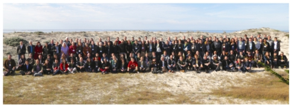
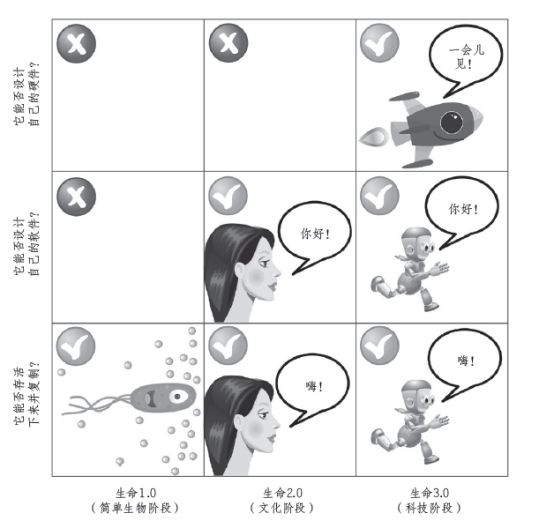
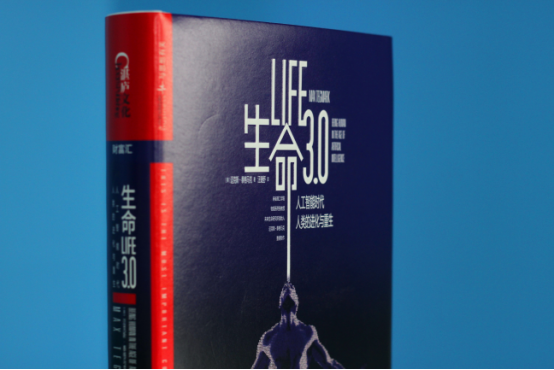

生命3.0：人工智能时代的人类身体进化史

简介
2017年8月，麻省理工学院物理系终身教授迈克斯·泰格马克的新书《生命3.0》 （Life 3.0: Being Human in the Age of Artificial Intelligence）出版，一经上市便迅速登顶亚马逊人工智能类书籍排行榜第一位，埃隆·马斯克、斯蒂芬·霍金、雷·库兹韦尔等多位学界和业界领袖给予极大的肯定和赞扬。更为难得的是，《科学》 《自然》两大权威学术期刊同时刊文推荐本书。这本书引发了硅谷、科学界和媒体广泛热烈讨论，并吸引国内媒体和各领域人士极大关注。
疯狂，迈克斯与未来生命研究所

由未来生命研究所主办的阿西洛马大会的合影，也是AI有益运动的“群英谱”。你可以在里面找到拉里·佩奇、埃里克•施密特这些企业家，吴恩达、丹米斯•哈萨比斯这样的技术专家，以及丹尼尔·卡尼曼这样的来自心理学、经济学、社会学方面的顶级专家。DeepMind、谷歌、Facebook、苹果、IBM、微软和百度等公司的代表悉数到场。
生命3.0：
人工智能将完成人类最终的进化
在书中，泰格马克将人类的进化史上划分为三个阶段。大约 40 亿年来，硬件（身体）和软件（生成行为的能力）都由生物学决定。而接下来的 10 万年，学习和文化使人类可以适应和控制自己的软件。在即将到来的第三阶段，软硬件都可以重新设计。
生命未必由血肉之躯构成。换言之，作者认为人工智能最终将发展为生命的更高形态，让人类有望在上亿年的尺度中实现繁荣。

一场讨论，关乎所有人的未来
斯蒂芬·霍金，雷·库兹韦尔都在评论中认同作者的这个观点：与人工智能相伴的生命的未来，是我们时代最为重要的讨论。
如今我们有很多讨论，但这些讨论都在回避一个更加重要的问题：如果有一天机器能比我们更好的胜任所有事情，将会发生什么？这个问题绝非危言耸听，在2017年的阿西洛马大会上，众多研究者认为，超越人类的“超级人工智能”将在2055年左右来临。
这张“人类能力地形图”是机器人专家汉斯·莫拉维克提出的，其中，海拔高度代表这项任务对计算机的难度，不断上涨的海平面代表计算机现在能做的事情。人工智能完全赶上人类只是时间问题。《生命3.0》
{kind=link}
《未来简史》的作者尤瓦尔·赫拉利在《卫报》上评论本书时，警告读者：“在AI革命这件事上，正如人类历史上一遍又一遍验证的那样，我们可能会基于鼠目寸光的短期考虑而做出影响最深远的决定。”他认为，作者泰格马克将技术的话题推向前所未有的深远之处。现在，科学正要进入一个由智能设计的无机生命进化时代，而这种生命形态最终可能会离开地球，散播到银河系各处。我们今天做出的选择，可能会对亿万年后地球之外的生命发展轨迹产生深远的影响。
在技术的迷宫中洞见未来
海姆•赫什在《科学》杂志上发表的书评中总结道：《生命3.0》聚焦在两个方面：AI的短期状态，以及AGI及其长期远景，并展望了从几十上百年到几千上万年再到几十亿年后的未来。在这个过程中，泰格马克讲述了一个物理学家眼中的智能与计算、目标导向行为的起源与本质及其对AGI的影响、意识的本质及其对AGI意味着什么，以及——稍稍偏离了本书对AI的关注——物理学可能会对我们的未来规定怎样的极限。
作者在书中探讨了这些问题：我们有生之年超级人工智能是否会诞生？它是否需要被控制？如果是的话，谁来做？人文科学（人道、人类的意义）是否还将在人工智能时代幸存？如果是的话，我们如何找到意义与目标？人工智能是否会有意识？我们应该期待哪样的未来？ 每一个问题都值得我们认真对待。
在汹涌发展的技术面前，我们很多观念已经变得陈腐落后。面对这样的情况，泰格马克以物理学家和人工智能专家的双重身份，对“生命”、“智能”、“目标”与“意识”这些概念展开重新思考与定义。这些颠覆性的观点已经在硅谷和科学界被广泛讨论，并获得了众多支持。而更为重要的是，作者通过《生命3.0》这本书建构起一个应对人工智能时代的动态的全新思维框架，让我们为未来做好充分准备。

正如“未来生命研究所”的创立宗旨所述：“科技正在让生活前所未有地快速前进……或是毁灭，我们应该将未来把握在自己手中！”这本书中所呼吁的AI有益研究，已经在全球范围内得到支持与重视。最后，作者在中文版的序言中写道：你，我亲爱的中国读者，请开始认真思考，你想看到一个什么样的未来社会变成现实。
《生命3.0》是一本科技界集体为之惊艳的“神书”。与人工智能相伴，人类将迎来怎样的未来？对于这个所有人都在关心的问题，作者泰格马克交出了一份不一样的精彩答案。在这本30万字的诚意之作中，他重新定义了生命、智能、目标和意识这些至关重要关键词，极大拓展了对人工智能思考的边界。作为顶尖的物理学家，泰格马克的写作基于最严密的逻辑推理和最大尺度的想象力，你将在一场畅快的阅读体验中，思考这个时代最重要的话题。